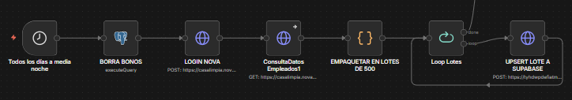
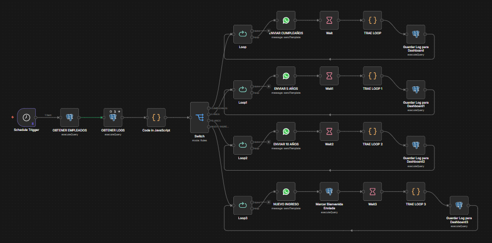

Informe Técnico de Automatización
| Cliente Interno: | Casalimpia |
| Plataforma: | n8n (Workflow Automation) |
| Carpeta N8N: | ENVIOS MASIVOS, ANTIGÜEDAD, CUMPLEAÑOS Y NUEVO INGRESO |
| Canal: | WhatsApp Business API (Meta) |
| Bases de Datos: | Supabase (PostgreSQL) y Novasoft Web API |
| Estado: | Producción |
1. Resumen Ejecutivo
La automatización de "Envíos Masivos" es una arquitectura corporativa diseñada para fortalecer el salario emocional y la comunicación interna en Casalimpia. Diariamente, el sistema sincroniza la base de datos completa de colaboradores desde el ERP (Novasoft), la procesa y segmenta mediante expresiones y lógicas de zona horaria, para disparar automáticamente mensajes personalizados por WhatsApp. Estos envíos felicitan a los empleados en su cumpleaños, celebran su antigüedad (5 y 10 años) y dan la bienvenida oficial a los nuevos ingresos, garantizando cero duplicidades mediante un estricto registro de logs transaccionales.
2. Arquitectura de la Solución
2.1. Componentes Tecnológicos
- Orquestador: n8n (Gestión de lógica, cronogramas diarios, control de lotes y ruteo).
- Canal de Salida: WhatsApp Business API (Uso de plantillas pre-aprobadas con variables dinámicas).
- Origen de Datos: Novasoft Web API (Autenticación nativa para extracción de la matriz de empleados).
- Base de Datos Operativa: Supabase (PostgreSQL) utilizada como puente de alto rendimiento para evitar la saturación de las APIs origen.
2.2. Estructura de Base de Datos (Supabase)
El sistema emplea dos tablas fundamentales para sostener la lógica masiva sin pérdida de rendimiento:
- Tabla: empleados_datos
- Tabla espejo alimentada diariamente desde Novasoft. Contiene los datos vitales para las notificaciones.
- Columnas Clave:
codEmp,nomEmp,fecNac(Cumpleaños),fecIng(Antigüedad),telCelybienvenida_enviada(Control booleano de nuevos ingresos).
- Tabla: 3-log_notificaciones (Auditoría e Historial)
- El "diccionario" de envíos. Registra el histórico de mensajes para prevenir que un empleado sea felicitado dos veces por el mismo motivo en el mismo año, y nutre el dashboard analítico.
3. Descripción Detallada de los Flujos (Workflows)
El sistema se divide en dos flujos interdependientes: Sincronización y Ejecución.
3.1. Flujo 1: Actualización de Planta (Sincronización Diaria)
Se ejecuta de forma programada a la medianoche (Schedule Trigger) para preparar los datos frescos del día.
- Limpieza y Autenticación: El flujo inicializa borrando variables residuales (bonos) y ejecuta un Login en la API de Novasoft para obtener el Bearer Token.
- Extracción y Empaquetado: Se consulta la matriz completa de empleados. Un nodo Code agrupa estos registros en Lotes de 500. Esto es una práctica esencial de arquitectura para ser "amigables" con los límites de Supabase y evitar tiempos de espera (Timeout) o colapsos de memoria en el servidor.
- Inserción Segura (Upsert): Un ciclo (Loop) toma cada lote y utiliza la API nativa REST de Supabase con el parámetro
resolution=merge-duplicates, insertando nuevos empleados o actualizando los existentes de forma limpia.
3.2. Flujo 2: Recopilación, Sectorización y Envíos Masivos
Este es el motor de comunicación. Se ejecuta cada mañana de forma programada.
- Obtención de Datos Limpios: Consulta simultáneamente a todos los empleados activos y la lista de mensajes (logs) que ya fueron enviados el día de hoy.
- Evaluación Lógica Central (El "Cerebro" JS):
- Fuerza la zona horaria a
America/Bogotapara evitar desfases de servidor que envíen mensajes en el día equivocado. - Itera sobre cada empleado y extrae el día y mes exacto de nacimiento e ingreso, comparándolos con el "hoy".
- Cruza la información con el Set (diccionario) de logs para descartar a quienes ya se les envió un mensaje.
- Fuerza la zona horaria a
- Enrutamiento (Switch) y Micro-Lotes (Loops): Los registros válidos se dividen en 4 caminos. Cada camino entra a un nodo Split in Batches configurado en lotes de 20 mensajes. Esto respeta las políticas de rate-limiting de Meta (WhatsApp).
- Envío y Registro (Nodos Rescatistas):
- Por cada 20 empleados, se envía la plantilla de WhatsApp correspondiente.
- Un nodo de espera (Wait) asegura la entrega.
- Un nodo Code (Rescatista) recupera la data original del empleado para evitar el efecto de pérdida de memoria del loop de n8n.
- Se inserta el registro final en
3-log_notificacionesy el ciclo vuelve a empezar. En el caso de nuevos ingresos, además se marca el campobienvenida_enviada = TRUEen la tabla maestra.
4. Reglas de Negocio y Seguridad
- Control Absoluto de Duplicados: La variable
enviosDeHoy = new Set()garantiza que si el flujo se interrumpe y se reinicia manualmente, el bot ignorará a quienes ya recibieron su felicitación horas antes. - Protección de Memoria (Execute Once): En la lectura de logs de la base de datos, el nodo está forzado a ejecutarse una sola vez (Execute Once), previniendo que n8n intente multiplicar la consulta por la cantidad de empleados entrantes (evitando bucles infinitos).
5. Casos de Uso y Escenarios del Usuario
Lógica: Fecha nacimiento = 13/05/1990. Hoy = 13/05/2026. Log 'cumpleanos' no existe. Acción: Enviar plantilla de felicitación. Guardar registro en Logs.
Lógica: Fecha ingreso = 13/05/2021. Hoy = 13/05/2026. Resta de años = 5. Log '5_anios' no existe. Acción: Enviar plantilla de "5 años en la Familia Casalimpia". Guardar registro en Logs.
Lógica: Fecha ingreso = 13/05/2016. Hoy = 13/05/2026. Resta de años = 10. Log '10_anios' no existe. Acción: Enviar plantilla de "10 años en la Familia Casalimpia". Guardar registro en Logs.
Lógica:
bienvenida_enviada = FALSE. Fecha ingreso <= Fecha de Hoy. Log 'nuevo_ingreso' no existe.
Acción: Enviar plantilla de bienvenida. Guardar Log. Actualizar DB maestra a bienvenida_enviada = TRUE.
6. Acceso al Informe Digital
Para la visualización de métricas de impacto, distribución por categorías y seguimiento detallado de envíos en tiempo real, consulte el siguiente enlace:
🌐 Dashboard de Bienestar y Comunicación Masiva
7. Anexos y Recursos

